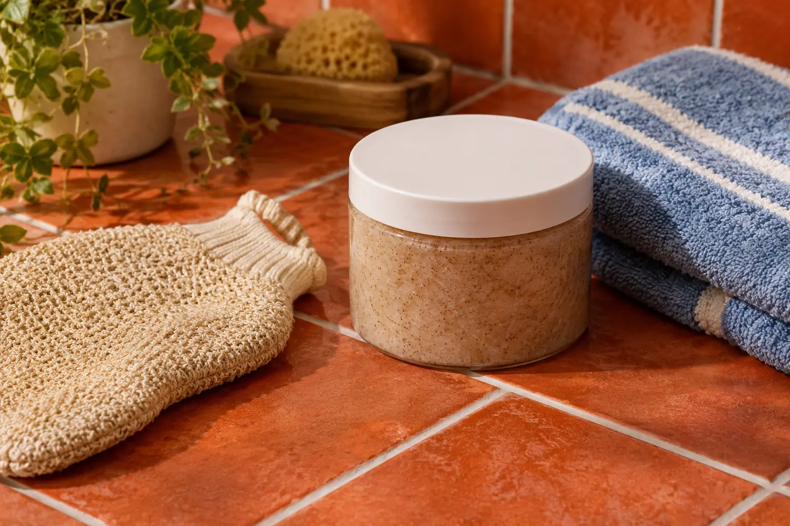

Kūno šveitimas: kosmetinės procedūros apimtis ir priežiūra
Autorius: Madbeauty redakcija · Numatyta 2026 m. gruodžio 23 d. 10:00 (Lietuvos laiku)
Supraskite, kuo kūno šveitimas skiriasi nuo drėkinimo, kaip palyginti procedūros apimtį ir kodėl priežiūra priklauso nuo naudoto produkto.

Kūno šveitimas – odos paviršiaus negyvų ląstelių pašalinimo komponentas. Jis gali būti mechaninis, kai naudojamas šveitiklis ar įrankis, arba cheminis, kai naudojama priemonė su šveičiančiomis medžiagomis. Šveitimas ir drėkinimas yra skirtingi procedūros tikslai, o vien pavadinimas neatskleidžia konkretaus produkto, zonos ar kitų įtrauktų darbų. Amerikos dermatologų akademija aprašo šiuos šveitimo būdus ir jų ribas; tai bendras paaiškinimas, o ne konkretaus salono protokolas.
Šveitimas ir drėkinimas – skirtingi procedūros tikslai
Šveitimo pavadinimas nurodo odos paviršiaus šveitimo komponentą. Drėkinimo procedūra akcentuoja kitą paslaugos tikslą, tačiau jos pavadinimas neparodo, ar šveitimas taip pat įtrauktas. Jei abu darbai pateikti viename pakete, aprašyme turėtų būti aišku, kokie etapai ir kokia zona įeina.
Konkretus pavyzdys: 2026 m. spalio 10 d. peržiūrėtame SPA Vilnius Vilniaus hamamo meniu Kese šveitimo ir sutepimo ritualas nurodytas kaip 40 min. trukmės, jo kaina – 60 €. Tai vieno teikėjo tuo metu pateikta konkretaus paketo apimtis, ne bendras šveitimo paslaugų standartas ar visos Lietuvos kainynas.
Kaip palyginti paslaugos apimtį
- Pirmiausia atskirkite tikslą: ieškote šveitimo komponento, drėkinimo procedūros ar paketo, kuriame aiškiai įvardyti abu darbai.
- Įvertinkite aprašytą metodą ir zoną. Žodžiai „kūno šveitimas“ patys nepasako, kokia priemonė ar įrankis bus naudojamas ir kokia kūno sritis įtraukta.
- Atskirkite pagrindinį darbą nuo papildomų komponentų, pavyzdžiui, sutepimo, drėkinimo ar įvyniojimo. Vieno darbo įtraukimas nereiškia, kad įtraukti ir kiti.
- Kainą ir trukmę lyginkite tik tada, kai sutampa zona ir darbų apimtis. Vien pavadinimų palyginimas gali reikšti skirtingus paketus.
- Po procedūros vadovaukitės konkrečiam naudotam produktui pateikta priežiūros instrukcija; universalaus šveitimo po procedūros plano iš pavadinimo nustatyti negalima.
Iliustracinis palyginimas: meniu įrašas „kūno šveitimas“ įvardija šveitimo komponentą, o „Kese šveitimas ir sutepimas“ nurodo ir papildomą darbą. Antras pavadinimas vis tiek neatskleidžia visų detalių: reikia vertinti konkrečią zoną, aprašytus etapus ir naudoto produkto instrukciją.
Priežiūra priklauso nuo naudoto produkto
Šveitimas tinka ne visiems, o netinkamai parinktas ar atliekamas gali sudirginti arba pažeisti odą, kaip nurodo Amerikos dermatologų akademija. Todėl konkretų po procedūros planą reikia sieti su naudotu produktu ir jo instrukcija. Šiame gide nepateikiami universalūs rūgščių stiprumo, šveitimo trukmės ar intervalų nurodymai.
Vien procedūros pavadinimas nėra įrodymas, kad šalinami toksinai, mažinamas svoris, gydoma liga ar garantuojamas konkretus rezultatas.
Platesnį kontekstą apie kūno priežiūros procedūrų paskirtį rasite gide „Kūno priežiūros gidas: odos procedūros, įvyniojimai ir aparatų paskirties ribos“.
Procedūrų aprašai kataloge: Kūno šveitimas, Kūno drėkinimo procedūra. Miestą ir realaus teikėjo pasiūlymą pasirinkite kataloge, kai tokia pasiūla pateikta.
Susiję gidai
Šaltiniai
- FDA · neinvazinės kūno kontūro procedūros · www.fda.gov
- Treatwell · kūno įvyniojimų LT pasiūlos pavyzdžiai · www.treatwell.lt
- NVSC · grožio ir sveikatos paslaugų riba · nvsc.lrv.lt
- VASPVT · sveikatos paslaugų teisėtumo patikra · vaspvt.lrv.lt
- AAD: šveitimo mechanizmai ir individualios ribos · www.aad.org
- SPA Vilnius: Vilniaus hamamo meniu · www.spavilnius.lt